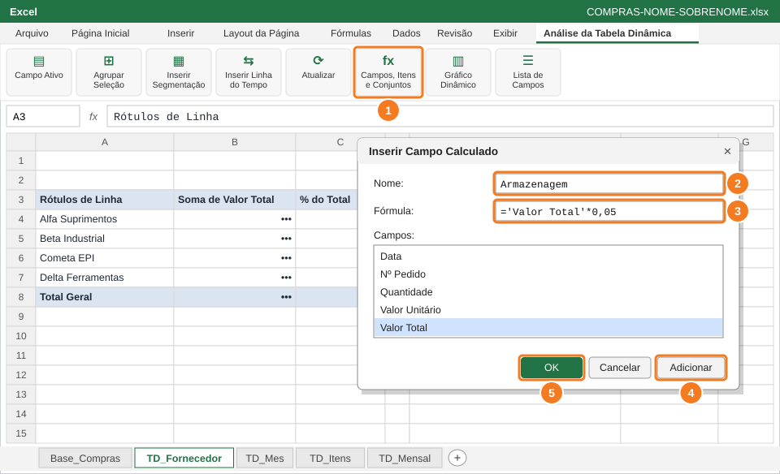
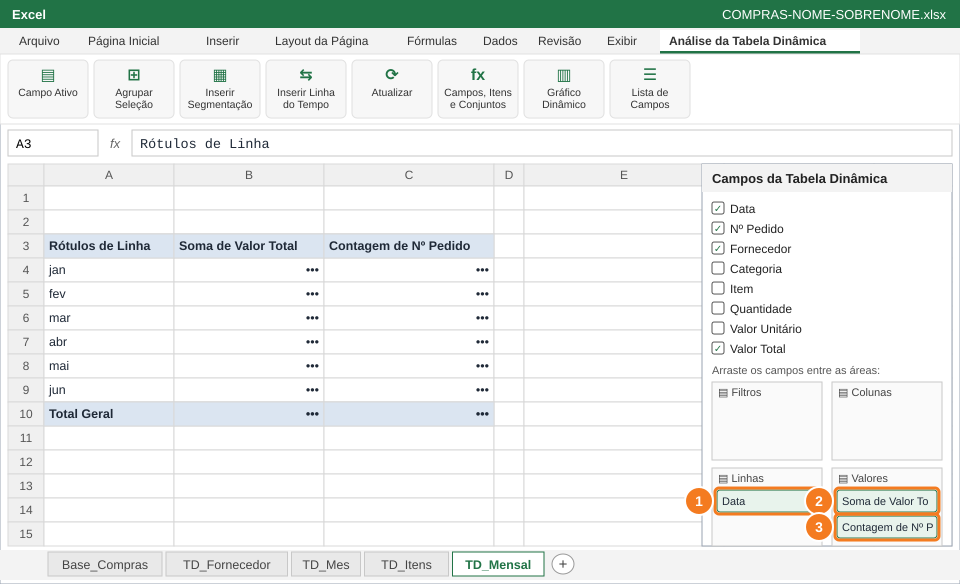
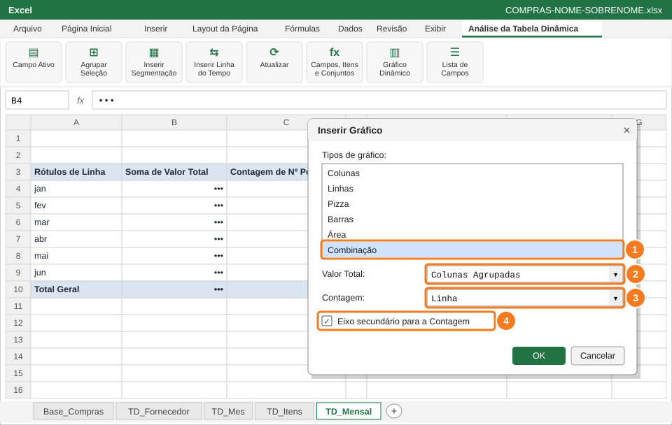
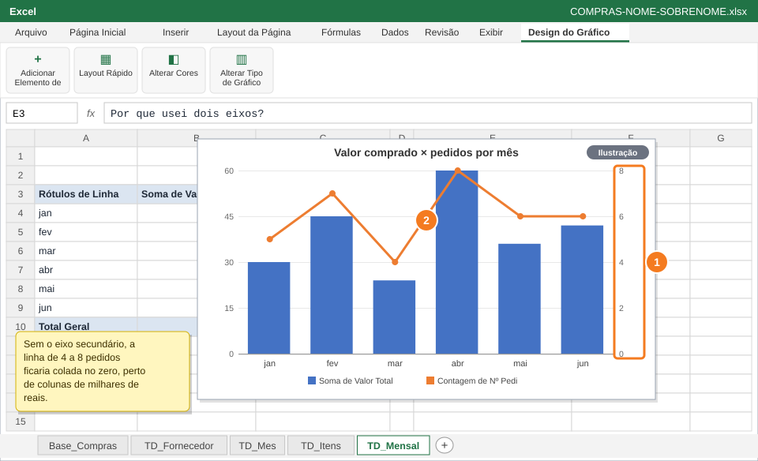

Calcular o custo de armazenagem (5% do valor comprado) sem mexer na base e comparar, num gráfico combinado, o valor comprado com a quantidade de pedidos de cada mês.
Você vai usar
Campos, Itens e Conjuntos → Campo Calculado
Soma e Contagem na mesma tabela dinâmica
Gráfico de Combinação com eixo secundário
Aba de trabalho:TD_Fornecedor e TD_Mensal (nova) · Slides de apoio: Arquivo 6 — slides 19 e 30–32
1
Crie o campo calculado Armazenagem

Campos, Itens e Conjuntos (1) → Campo Calculado: nome (2), fórmula (3), Adicionar (4) e OK (5).
Vá à aba TD_Fornecedor e clique na tabela dinâmica.
Guia Análise da Tabela Dinâmica → Campos, Itens e Conjuntos (1) → Campo Calculado.
Nome: Armazenagem (2). Fórmula (3): apague o 0, dê duplo clique em Valor Total na lista e complete com *0,05.
Clique em Adicionar (4) e em OK (5). A coluna Soma de Armazenagem aparece na tabela: formate como Moeda.
='Valor Total'*0,05
💡 DicaO campo calculado não cria coluna na base: o cálculo existe só dentro da tabela dinâmica e acompanha os filtros.
🐧 No LibreOffice CalcO Calc não tem campo calculado. Crie na base a coluna Armazenagem com =H2*0,05 e coloque-a em Valores.
2
Monte a TD_Mensal com soma e contagem

Data em Linhas (1), Soma de Valor Total (2) e Contagem de Nº Pedido (3) em Valores.
Crie mais uma tabela dinâmica a partir da Base_Compras, em nova planilha, e renomeie a aba para TD_Mensal.
Data em Linhas (1), agrupada só por Meses (se aparecer Trimestres, desmarque no Agrupar).
Valor Total em Valores (2), formato Moeda, e Nº Pedido em Valores como Contagem (3).
✅ VerifiqueA tabela tem 6 linhas de meses e duas colunas de valores: uma em R$ e outra com números inteiros pequenos.
3
Crie o gráfico de combinação

Tipo Combinação (1): Valor Total em colunas (2), Contagem em linha (3) no eixo secundário (4).
Clique na TD_Mensal → Gráfico Dinâmico → escolha Combinação (1).
Soma de Valor Total: Colunas Agrupadas (2).
Contagem de Nº Pedido: Linha (3), marcando Eixo Secundário (4) → OK.
Título: Valor comprado × pedidos por mês.
🐧 No LibreOffice CalcInserir → Gráfico → Coluna e linha; em Série de dados, escolha Eixo Y secundário para a contagem.
4
Entenda por que usar dois eixos

Eixo secundário à direita (1) para a linha de pedidos (2).
Observe: o eixo da esquerda mede reais e o da direita (1) mede pedidos (2).
Em E3 da TD_Mensal digite Por que usei dois eixos? e, em F3, responda em uma frase.
Salve: Ctrl+B.
💡 DicaUse eixo secundário quando duas medidas têm escalas muito diferentes (milhares de reais × poucos pedidos).
📋 Como esta questão será avaliada
Critério
Pontos
Campo calculado Armazenagem na TD_Fornecedor
0,4
TD_Mensal com soma de valor e contagem de pedidos
0,4
Gráfico combinado com a contagem em linha no eixo secundário